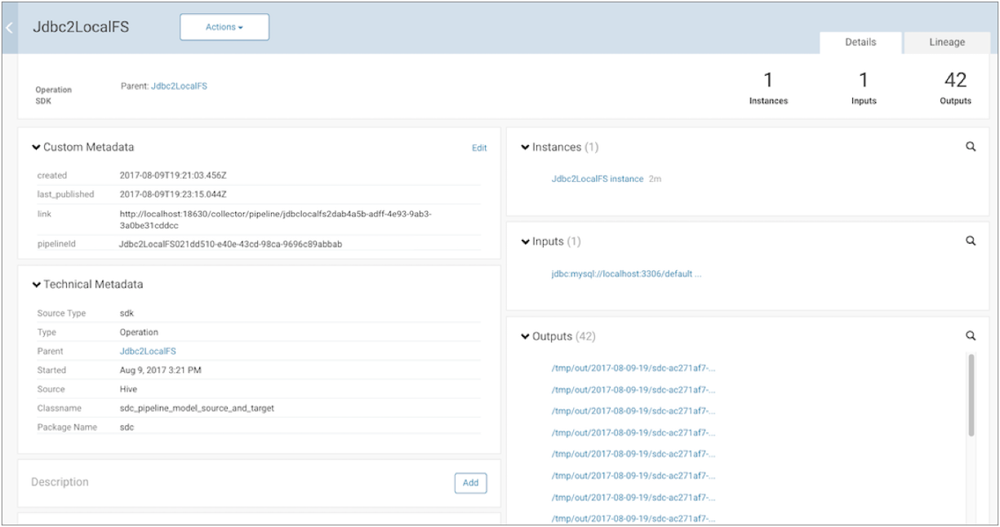

Publishing Metadata to Cloudera Navigator (Beta)
If you use Cloudera Manager, you can configure Data Collector to publish metadata about running pipelines to Cloudera Navigator. You can then use Cloudera Navigator to explore the pipeline metadata, including viewing lineage diagrams of the metadata.
At this time, only some pipeline stages support publishing metadata. Data Collector publishes metadata for all supported stages in all running pipelines. If you have multiple Data Collectors that run pipelines, configure each Data Collector to publish metadata to the same Cloudera Navigator instance.
Data Collector uses separate threads to publish metadata - so enabling metadata publishing has no effect on the running pipeline threads. Every pipeline publishes metadata when the pipeline starts and when it stops. Some origins and destinations publish metadata only once, typically when they initialize. However, some stages publish metadata each time they create a new object - for example, when the Hadoop FS or Local FS destination creates a new output file.
When publishing metadata, Data Collector makes an HTTPS request to Cloudera Navigator, using basic authentication. The data is sent in JSON format.
Prerequisites
Before you enable Data Collector to publish pipeline metadata to Cloudera Navigator, you must complete the following prerequisites:
- Verify that Data Collector has the Cloudera CDH stage library version 5.10 or 5.11 installed.
- Data Collector requires the Cloudera CDH stage library version 5.10 or 5.11 to connect to and publish metadata to Cloudera Navigator.
- To verify that a Data
Collector has a valid Cloudera CDH stage library installed, click the Package Manager
icon (
 ) to display the list of installed stage libraries.
If the required library version is not installed, install
the library before configuring Data
Collector to publish pipeline metadata to Cloudera Navigator.
) to display the list of installed stage libraries.
If the required library version is not installed, install
the library before configuring Data
Collector to publish pipeline metadata to Cloudera Navigator. - Add the Cloudera Navigator data management roles to your Cloudera Manager cluster.
- Add the following Navigator roles to the Cloudera Management Service:
- Cloudera Navigator Audit Server role
- Cloudera Navigator Metadata Server role
- For instructions, see the Cloudera Manager documentation.
Viewing Published Metadata
You can view published pipeline metadata in near real time in Cloudera Navigator. Cloudera Navigator lists each pipeline by pipeline title and displays supported origins as inputs and supported destinations as outputs.
For example, let's assume that you run a pipeline that includes a JDBC Query Consumer origin and a Local FS destination. Cloudera Navigator displays a single input representing the JDBC Query Consumer origin. As the pipeline runs, the Local FS destination creates multiple output files. Cloudera Navigator displays multiple outputs, each output representing one of the generated output files.
Cloudera Navigator displays the details of the published pipeline metadata as follows. Note how our example Jdbc2LocalFS pipeline is listed with 1 input and 42 outputs - one output for each generated output file:

Cloudera Navigator displays the pipeline lineage diagram as follows:

Supported Stages
- Dev Data Generator origin
- Directory origin
- JDBC Query Consumer origin
- Hadoop FS destination
- Local FS destination
- HBase destination
- Hive Streaming destination
- Kudu destination
When a pipeline includes an unsupported stage, Cloudera Navigator does not display that stage as an input or output. For example, if a running pipeline includes an unsupported origin and the Hadoop FS destination, then Cloudera Navigator displays the pipeline as having 0 inputs and multiple outputs - one output for each generated output file. If a running pipeline includes no supported origins or destinations, Cloudera Navigator displays the pipeline as having 0 inputs and 0 outputs.
Configuring Data Collector to Publish Metadata
Configure the lineage publisher properties in the Data Collector configuration file, $SDC_CONF/sdc.properties. When administering Data Collector with Cloudera Manager, configure the Data Collector configuration properties through the StreamSets service in Cloudera Manager. Manual changes to the configuration file can be overwritten by Cloudera Manager.